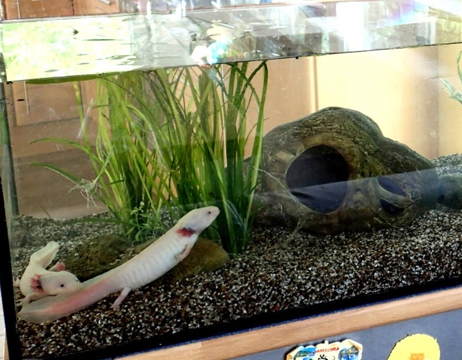

In this Axolotl care sheet, we will cover the ideal tank size, tank mates, temperature, lighting,
water parameters, diet and more, to give you everything you need to get started with your new Axolotl habitat.
NOTE: This care sheet was NOT written by us, but was rather taken from a Axolotl.org.
Axolotls generally grow to around 20-30cm (8-12"), although specimens of up to 45cm (18")
have been recorded. Therefore, despite not being particularly active pets, they do require
an enclosure with a good amount of space, especially if you're adding other Axolotls as tank mates.

The footprint of an Axolotl tank should take priority over
the water volume. We recommend a 90cm aquarium for a
single adult, or a 120cm (4ft) aquarium for a pair of
fully grown adult Axolotls. Young Axolotls can be housed
in a smaller 60cm (2ft) aquarium, but this would need to be
upgraded as the Axolotl reached maturity.
A new Axolotl tank should be treated in the same way as a
new aquarium for fish, and should be cycled with ammonia
for 6 to 8 weeks before introducing your new Axolotl,
regularly testing the water until the ammonia and nitrites
consistently remain at 0ppm, and you can begin to see the
presence of nitrates - this means your filter is fully cycled
and colonised by beneficial nitrifying bacteria.
Axolotls, unlike many terrestrial amphibians, do not require any specific lighting.
A standard aquarium light to provide a day/night cycle will suffice, although they
don't tend to like too much bright light, so it is best to keep it on a lower setting.
The ideal water temperature for an Axolotl aquarium is between 15-18°C (59-64°C), which
that in most instances, no heater is required. Most aquariums will come as a full kit,
and already include a heater, in which case, it is worth keeping hold of in the event of
a drastic temperature drop that may bring the water temperature lower than optimum.
Axolotls are very sensitive to poor water quality, and can make for quite messy pets.
It is, therefore, a particularly important part of Axolotl care to provide adequate
filtration to your Axolotl's tank.
Again, most aquariums are sold as kits and will come either with a drip filter system
installed or with their own internal or external filter, which will already be rated
for the water volume of the tank, although it is important to ensure the water flow
remains steady and not too high, as Axolotls do not enjoy a strong water flow.
Axolotls feed primarily on animal material, which means they are carnivores,
possessing poor eyesight but a keen sense of smell. They should be fed a varied
diet of Axolotl pellets, large earthworms, bloodworm and other commercially available
frozen fish foods, such as cockles and mussels. It is important to remove any uneaten
food fairly quickly, as when the food is left in for too long, it can have a detrimental
effect on your water parameters.